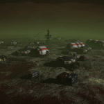
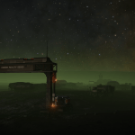
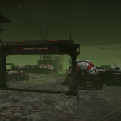
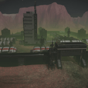
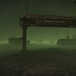
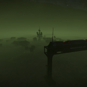
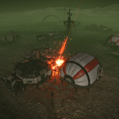
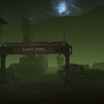
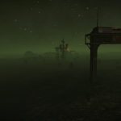

Background Lore Index - In the galaxy of Elite Dangerous there are the Galnet News posts that give us insight into the world around us. In addition to the main story played out in front of us via those articles, Elite Dangerous has a rich background story that pilots can stumble across through various methods including trilateration through listening...
Background Lore Index - In the galaxy of Elite Dangerous there are the Galnet News posts that give us insight into the world around us. In addition to the main story played out in front of us via those articles, Elite Dangerous has a rich background story that pilots can stumble across through various methods including trilateration through listening...
Betterton Outpost - Betterton Outpostis an abandoned settlement that has been attacked by Thargoids in the HIP 19792 system on body C 2.
Comms Facility 89563 - Comms Facility 89563 is an abandoned settlement that has been attacked by Thargoids in the HR 1172 system on body A 5 b.
Dominic’s Corner - Dominic's Corner is an abandoned settlement that has been attacked by Thargoids in the Pleiades Sector GW-W c1-15 system on body 12 a.
Penal Colony BV-2259 - Penal Colony BV-2259 is an abandoned penal colony that has been attacked by Thargoids in the HIP 16217 system on body AB 1 a.
Research Base KG-3362 - Research Base KG-3362 is an abandoned settlement that has been attacked by Thargoids in the Pleiades Sector HR-W d1-17 system on body 1 a.
Research Base LV 87 - Research Base LV 87 is an abandoned settlement that has been attacked by Thargoids in the HIP 17403 system on body A 4 a.
Scrump Landing - Scrump Landing is an abandoned settlement that has been attacked by Thargoids in the Pleiades Sector JN-S B4-3 system on body 2.
Sharpe Works - Sharpe Works is an abandoned settlement that has been attacked by Thargoids in the Pleiades Sector IC-U B3-1 system on body 1.
Site 94 - Site 94 is an abandoned settlement that has been attacked by Thargoids in the HIP 19284 system on body A 2 d. The Sanctum / The Prophet - The Sanctum and The Prophet are a pair of planetary settlements can be found in the Etain system, on body 4 a and body 4 c. They have permanent navigation markers (earlier settlements needed to be scanned before you could see them in the Navigation panel of your ship). The settlements appear to have been...
The Sanctum / The Prophet - The Sanctum and The Prophet are a pair of planetary settlements can be found in the Etain system, on body 4 a and body 4 c. They have permanent navigation markers (earlier settlements needed to be scanned before you could see them in the Navigation panel of your ship). The settlements appear to have been...